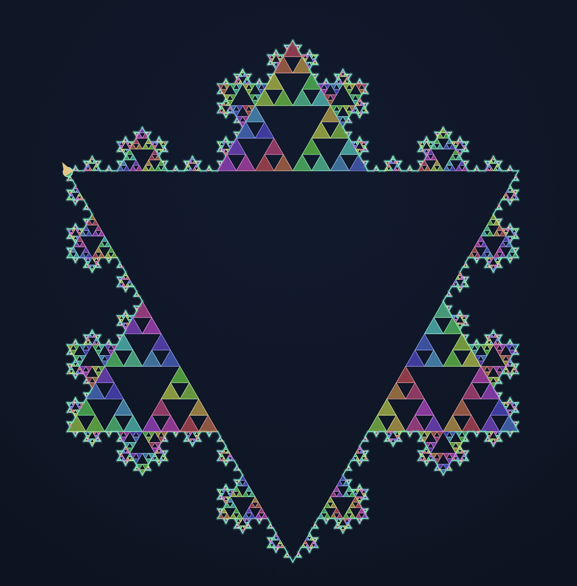
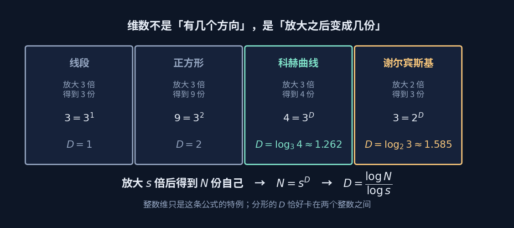

分形与维数
Fractals & Dimension
一条线是一维，一张纸是二维。那么，一条无限曲折、却始终画在纸上的线，是几维？

上面这张图里其实有两个分形：外轮廓是科赫曲线， 每个凸起的顶点上又长出一整棵谢尔宾斯基三角形。 它们的维数分别是 $1.262$ 和 $1.585$——都不是整数，而且不一样。
左上角那只小海龟停在起点上。整张图是它一笔一笔爬出来的， 规则只有短短几行，剩下的全是重复。
维数：放大之后变成几份
"维数"这个词日常用得很随意——上下左右前后，三个方向，三维。 但这个说法碰到科赫曲线就卡住了：它画在一张纸上，处处不光滑， 长度无限而面积为零。说它一维，太少；说它二维，太多。
换一个问法就通了：把图形放大 $s$ 倍，它变成了几份自己？

线段放大 3 倍得到 3 份，$D=1$；正方形放大 3 倍得到 9 份，$D=2$—— 整数维只是这条公式的特例。而科赫曲线放大 3 倍得到 4 份， $D=\log_3 4\approx1.262$，它卡在一维和二维之间。
这个数字在说什么
$1.262$ 的意思是：它比直线更"占地方"，但又填不满平面。 维数在这里不再是"有几个方向"，而是一种衡量粗糙程度的尺度—— 海岸线、血管、闪电、股价曲线，都能用它量。
另一条线：测度
维数问"有多粗糙"，测度问一个更基本的问题：这个集合有多大？ 长度、面积、体积、概率，都是测度。
听起来平淡，但它能通向很反直觉的地方。下面这个构造叫 Perron 树： 把一个三角形切成 $2^n$ 根细条，再让它们互相重叠着平移。
面积可以压到任意小——重叠吃掉了并集的面积
方向却一根都没丢——每根细条只是平移，朝向分毫未变
于是你得到一个面积几乎为零、却包含了所有方向的集合。 这正是Kakeya 问题的核心：一根针要在平面上转满一圈， 扫过的面积可以小到任意程度。
两条线在这里合流
Perron 树的并集面积是怎么算出来的？把所有小三角形画到一张离屏画布上， 数被涂色的像素占了多大比例。这跟用盒计数法估分形维数是同一个思路—— 拿一把有刻度的尺子去量，看刻度变细时读数怎么变。测度和维数， 说到底都是"用尺子量集合"这件事的不同问法。
四个概念
自相似 Self-similarity
- 是什么
- 局部放大之后，和整体长得一样。
- 怎么造出来
- 写一条规则，然后对自己反复施加。科赫曲线的规则只有一句： 把每段中间三分之一顶出一个尖。递归深度加一，细节多一层。
- 结构位置
- 严格自相似的分形（科赫、谢尔宾斯基）可以用迭代函数系统描述—— 每一步都是一个矩阵变换加一次平移，正是 矩阵板块里那套东西在反复作用。
- 近似自相似
- 自然界的分形（海岸线、云、树枝）只是统计意义上自相似， 放大之后"像"但不"等于"。
分形维数 Fractal Dimension
- 是什么
- $D=\dfrac{\log N}{\log s}$，放大 $s$ 倍得到 $N$ 份自己。
- 在量什么
- 粗糙程度、填充空间的能力。$D$ 越接近 2，这条曲线越"想"填满平面。
- 怎么测真实物体
- 盒计数法：用边长 $\varepsilon$ 的方格盖住图形， 数需要几个格子 $N(\varepsilon)$，然后看 $\log N$ 对 $\log(1/\varepsilon)$ 的斜率。 英国海岸线约 $1.25$，挪威峡湾约 $1.52$。
- 为什么尺子越短海岸线越长
- 因为 $D>1$。量到的长度随尺子变短而发散， 所以"海岸线有多长"这个问题本身就没有确定答案。
测度 Measure
- 是什么
- 给集合分配一个"大小"的规则。长度、面积、体积、概率都是测度。
- 基本要求
- 非负；空集为零；互不相交的集合可以把大小加起来。 看着平常，但正是最后这条让"面积"这个概念站得住。
- 结构位置
- 积分就建在测度上——微积分板块里 "把 $f\,dx$ 累起来"的那个 $dx$，严格说就是一个测度。
- 零测集
- 面积为零但点数无穷多的集合。Perron 树逼近的就是这种东西： 什么都装不下，却装得下所有方向。
递归 Recursion
- 是什么
- 函数调用自己，直到触底返回。
- 在分形里的角色
- 分形的定义天然是递归的，代码也就写得极短。 画出上面那张图的核心不过十几行——复杂度在图里，不在代码里。
- 代价
- 图元数量随深度指数增长。科赫每加一层线段数乘 4， 谢尔宾斯基每加一层三角形数乘 3。演示里把层数拉满，浏览器会明显卡顿。
- 触底条件写错
- 无限递归，栈溢出。这是写分形代码最常见的一个错。
一句话
整数维是特例，不是常态。
自然界里几乎没有光滑的东西——云不是球，山不是锥，海岸线不是圆弧。
分形几何做的事，是给这些"不规则"找到一把能量的尺子。